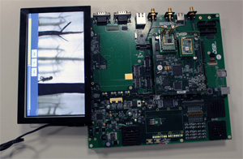
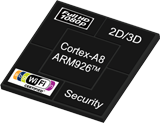

XpndR III SDK : embedded
 The XpandR III SDK is a software package that provides a bootloader, Linux O.S., and Google’s Android mobile platform; all have been tailored and modified to take advantage of the XpndR III chipset, utilizing the chipset’s video and graphics hardware processing units, its communication subsystem and security processor.
 DSP Group®’s innovative XpandR III chipset is designed for voice, data, audio and video applications. Suitable for a wide variety of multimedia, telephony and VoIP products, XpandR III is a highly integrated and comprehensive solution that includes an application processor, a communications sub-system, multimedia hardware engines, and a security processor. The chipset includes a companion chip for power management as well as two companion RF transceiver chips for Wi-Fi and DECT.
My contribution to the XpndR III SDK includes:
- Development and modification to the open-source u-boot bootloader.
- Development of new Linux kernel device drivers such as: touch-screen, VPU (Video Processing Unit), accelerometer, memory management, and battery charger driver.
- VPU and GPU integration into Android's high levels utilizing the chipset's hardware video and graphics processing units.
- Video Decoding and Encoding optimizations in the system as a whole.